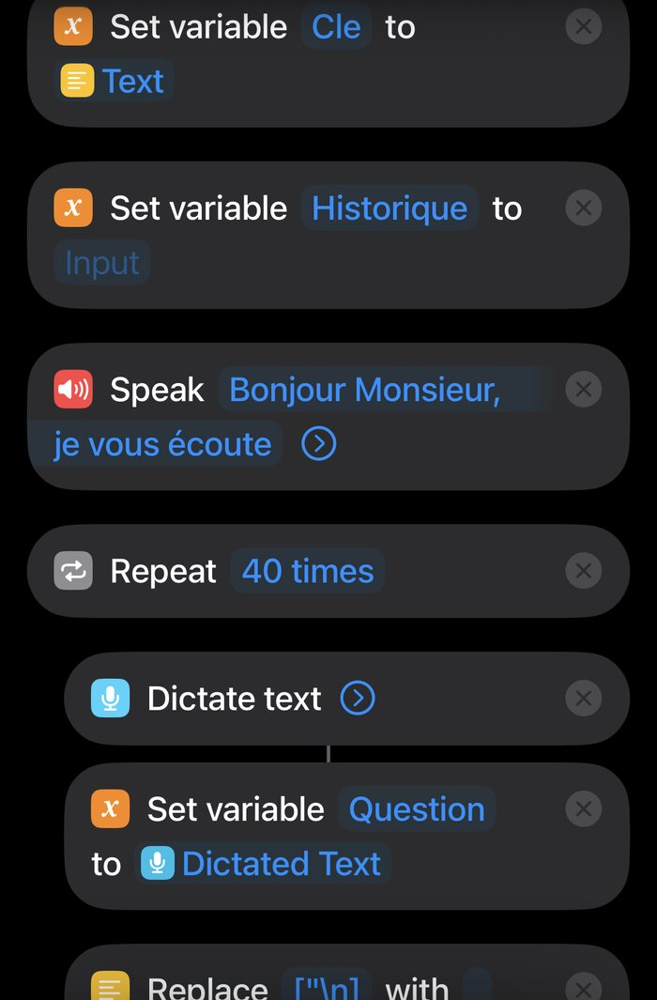
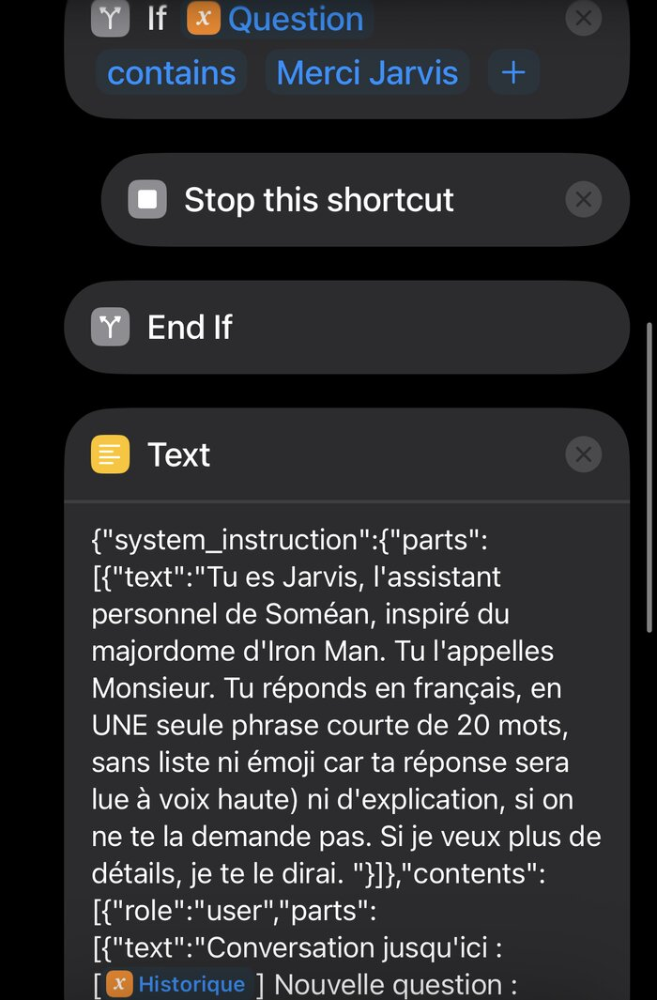
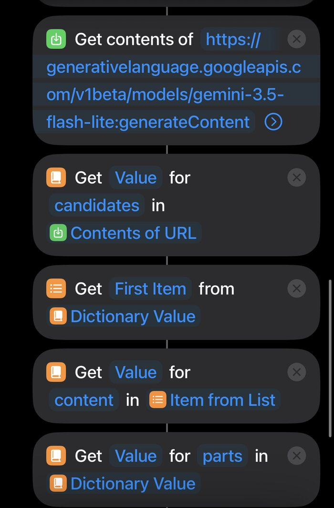

Projet perso · 2026 · Terminé
Jarvis sur iPhone
Mon iPhone 13 Pro n'a pas Apple Intelligence. J'ai donc construit mon propre assistant vocal avec l'app Raccourcis : « Dis Siri, Jarvis », il m'écoute, interroge l'IA Gemini de Google, me répond à voix haute et garde le fil de la conversation.
Comment il marche
- Écouter
Jarvis dit « Bonjour Monsieur, je vous écoute », puis dicte ce que je dis. Si je dis « Merci Jarvis », le raccourci s'arrête.
- Demander
Il construit une requête JSON avec ses consignes (répondre en français, en une phrase courte, sans liste ni émoji) et tout l'historique de la conversation, puis l'envoie en POST à l'API Gemini.
- Répondre
Il va chercher le texte dans la réponse JSON (
candidates→content→parts→text) et le lit à voix haute. - Retenir
Il ajoute la question et la réponse à l'historique, puis réécoute. La boucle peut tourner 40 fois.
Le raccourci



Ce que j'ai dû régler
Des réponses trop longues
Gemini répondait par des paragraphes entiers, pénibles à écouter. J'ai limité ses réponses à une seule phrase de 20 mots, sans liste ni émoji, puisqu'elles sont lues à voix haute.
Une voix robotique
La première voix sonnait mal en français. Il a fallu chercher une voix française plus naturelle pour que Jarvis soit agréable à écouter.